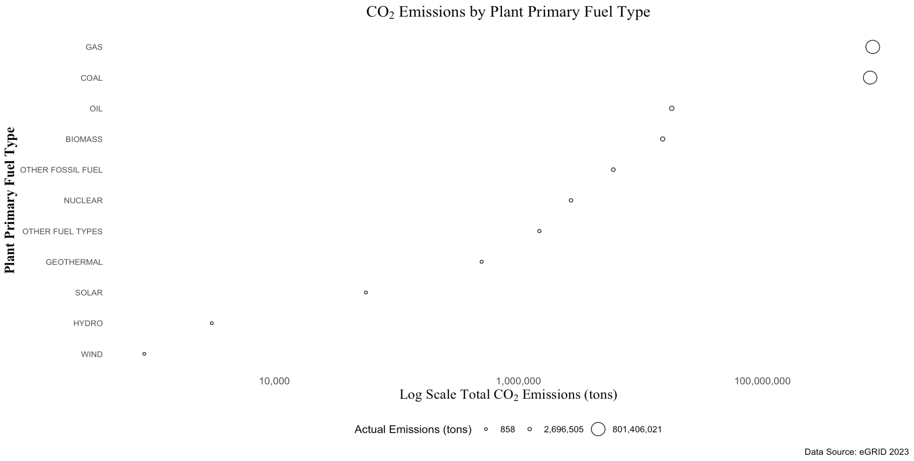
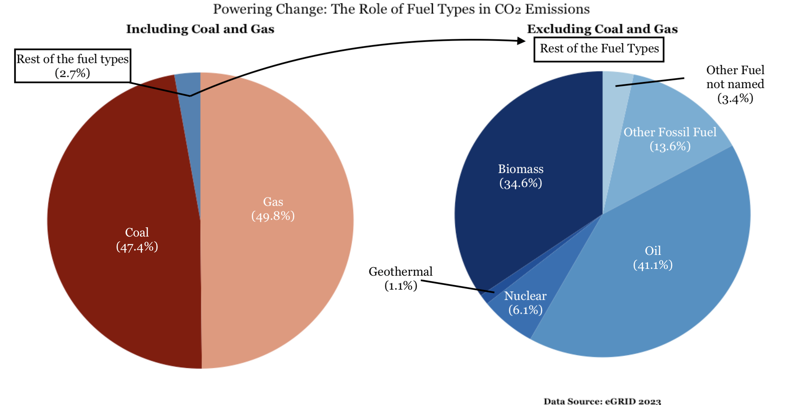
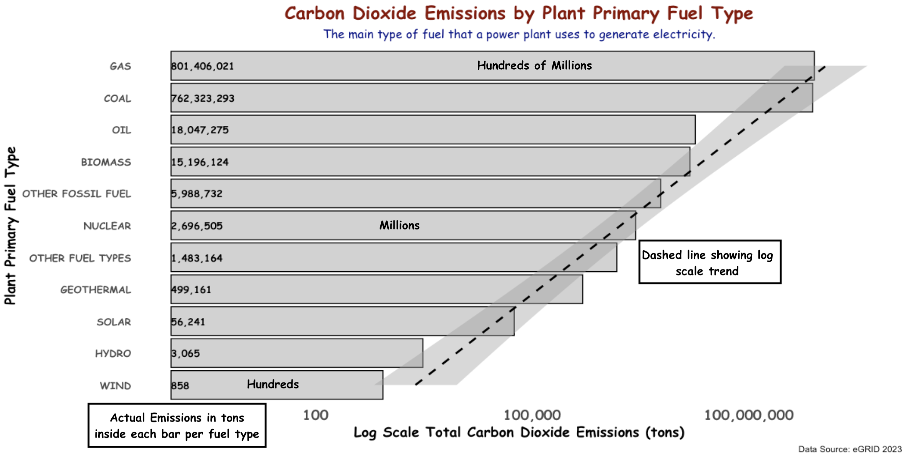

library(readxl)
library(dplyr)
library(ggplot2)
library(gridExtra)
library(RColorBrewer)
library(gridExtra)
library(scales)
library(grid)
library(ggrepel)
library(extrafont)
# Load in excel file
sheet_names <- excel_sheets("data/egrid2023_data_rev1.xlsx")
# Print the sheet names
print(sheet_names)
# Read in necessary data from a specific sheet
data_sheet <- read_excel("data/egrid2023_data_rev1.xlsx", sheet = "PLNT23")
# Save column names to a .txt file to view
write(colnames(data_sheet), "column_names.txt")
# Summarize CO2 emissions by plant primary fuel type
fuel_emissions_summary <- data_sheet %>%
# Select only the relevant columns: fuel category and CO2 emissions
select(`Plant primary fuel category`, `Plant annual CO2 emissions (tons)`) %>%
# Convert all columns starting with "Plant annual" to numeric values
mutate(across(starts_with("Plant annual"), as.numeric)) %>%
# Remove rows with any missing values
na.omit() %>%
# Group data by the primary fuel category
group_by(`Plant primary fuel category`) %>%
# Summarize total CO2 emissions for each fuel category
summarize(total_CO2_emissions = sum(`Plant annual CO2 emissions (tons)`, na.rm = TRUE)) %>%
# Replace abbreviations with full names
mutate(`Plant primary fuel category` = dplyr::recode(`Plant primary fuel category`,
"OFSL" = "OTHER FOSSIL FUEL",
"OTHF" = "OTHER FUEL TYPES"))
# Combine all except COAL and GAS into one row
df_coal_gas <- fuel_emissions_summary %>%
mutate(`Plant primary fuel category` = ifelse(`Plant primary fuel category` %in% c("COAL", "GAS"), `Plant primary fuel category`, " ")) %>%
group_by(`Plant primary fuel category`) %>%
summarize(total_CO2_emissions = sum(total_CO2_emissions, na.rm = TRUE))
# Exclude COAL GAS SOLAR WIND HYDRO
df_no_coal_gas <- fuel_emissions_summary %>%
filter(!`Plant primary fuel category` %in% c("COAL", "GAS", "SOLAR", "WIND", "HYDRO"))
# Only Solar, Wind, and Hydro
df_solar_wind_hydro <- fuel_emissions_summary %>%
filter(`Plant primary fuel category` %in% c("SOLAR", "WIND", "HYDRO"))
#| fig-alt: A scatter plot displaying total CO2 emissions by plant primary fuel type. Each point is sized according to the emissions value. The points are uncolored, with a uniform size. The x-axis is on a log scale, and the plot provides a comparison of emissions across different fuel types, with the size legend indicating actual emissions in tons.
#| fig-cap: A scatter plot showing CO2 emissions for various plant primary fuel types, with point size reflecting the total emissions.
# Create a scatter plot of CO2 emissions by plant primary fuel type
# Calculate min, median, and max for CO2 emissions
min_emission <- min(fuel_emissions_summary$total_CO2_emissions, na.rm = TRUE)
max_emission <- max(fuel_emissions_summary$total_CO2_emissions, na.rm = TRUE)
median_emission <- median(fuel_emissions_summary$total_CO2_emissions, na.rm = TRUE)
# Create a scatter plot of CO2 emissions by plant primary fuel type
plot1 <- ggplot(fuel_emissions_summary, aes(x = total_CO2_emissions,
y = reorder(`Plant primary fuel category`, total_CO2_emissions))) +
# Plot points sized by total CO2 emissions (no color fill)
geom_point(aes(size = total_CO2_emissions), shape = 21, fill = "white", color = "black") +
# Set plot labels with proper formatting for CO2 subscript
labs(
title = expression(paste("CO"[2], " Emissions by Plant Primary Fuel Type")), # Title with CO₂ subscript
x = expression(paste("Log Scale Total CO"[2], " Emissions (tons)")), # x-axis label with log scale
y = "Plant Primary Fuel Type", # y-axis label
caption = "Data Source: eGRID 2023", # Caption with data source
size = "CO2 Emissions (tons)" # Legend title for size scale
) +
# Apply minimal theme (no background)
theme_minimal() +
# Apply log scale to x-axis and format x-axis labels with commas
scale_x_continuous(trans = 'log10', labels = scales::label_comma()) +
# Format the size legend with commas and set min, median, max for size breaks
scale_size_continuous(labels = scales::label_comma(),
breaks = c(min_emission, median_emission, max_emission),
limits = c(min_emission, max_emission)) +
# Customize plot appearance (font size, styles, grid lines, etc.)
theme(
axis.text.x = element_text(size = 10, family = "Arial"), # x-axis text size and font
axis.title.x = element_text(size = 14, family = "Times New Roman", face = "bold"), # x-axis title style
axis.text.y = element_text(size = 8, family = "Arial"), # y-axis text size and font
axis.title.y = element_text(size = 14, family = "Times New Roman", face = "bold"), # y-axis title style
plot.title = element_text(hjust = 0.5, size = 16, family = "Times New Roman", face = "bold"), # Centered title style
legend.position = "bottom", # Position the legend at the bottom
panel.grid = element_blank() # Remove grid lines
) +
# Add the size legend with custom title
guides(size = guide_legend(title = "Actual Emissions (tons)"))
# Display the plot
print(plot1)
#| fig-alt: Two side-by-side pie charts depicting the distribution of CO2 emissions by plant primary fuel type. The first chart includes all fuel types, with warm colors representing COAL and GAS, while the second chart excludes COAL and GAS, highlighting other fuel types in cool colors. Emission values are visualized as pie slices, providing a comparison of emissions between the two scenarios—one with and one without COAL and GAS sources.
#| fig-cap: The left pie chart shows the distribution of CO2 emissions from various fuel types, including COAL and GAS, while the right chart focuses on emissions without COAL and GAS sources, emphasizing a cleaner energy mix.
# Calculate percentage CO2 emissions by fuel type in both dataframes
df_coal_gas <- df_coal_gas %>%
mutate(percentage = round(total_CO2_emissions / sum(total_CO2_emissions) * 100, 1))
df_no_coal_gas <- df_no_coal_gas %>%
mutate(percentage = round(total_CO2_emissions / sum(total_CO2_emissions) * 100, 1))
# Define color palettes
custom_colors <- c(
"COAL" = "darkred",
"GAS" = "darksalmon",
" " = "steelblue")
cool_colors <- rev(brewer.pal(9, "Blues"))
# Plot 1: Pie chart for all fuel types including Coal and Gas (Warm colors)
first_plot <- ggplot(df_coal_gas, aes(x = "", y = total_CO2_emissions, fill = `Plant primary fuel category`)) +
geom_bar(stat = "identity", width = 1) + # Bar chart to pie chart
coord_polar(theta = "y") + # Polar coordinates for pie chart
scale_fill_manual(values = custom_colors) + # Warm color palette
theme_void() + # Clean theme
theme(
legend.position = "none", # No legend
plot.title = element_text(hjust = 0.5, family = "Georgia", size = 14, face = "bold"), # Title style
plot.caption = element_text(hjust = 0.5, size = 10) # Caption style
) +
labs(
title = "Including Coal and Gas", # Title for plot 1
)
# Plot 2: Pie chart excluding Coal and Gas (Cool colors)
second_plot <- ggplot(df_no_coal_gas, aes(x = "", y = total_CO2_emissions, fill = `Plant primary fuel category`)) +
geom_bar(stat = "identity", width = 1) + # Bar chart to pie chart
coord_polar(theta = "y") + # Polar coordinates for pie chart
scale_fill_manual(values = cool_colors) + # Cool color palette
theme_void() + # Clean theme
theme(
legend.position = "none", # No legend
plot.title = element_blank(), # No title for plot 2
plot.caption = element_text(hjust = 0.5, family = "Georgia", size = 10, face = "bold"), # Caption style for plot 2
plot.subtitle = element_text(hjust = 0.5, family = "Georgia", size = 14, face = "bold") # Subtitle styling
) +
labs(
subtitle = "Excluding Coal and Gas", # Subtitle for plot 2
caption = "Data Source: eGRID 2023" # Caption for plot 2
)
# Combine plots side by side with a central title
plot2 <- grid.arrange(first_plot, second_plot, ncol = 2, widths = c(1, 1), top = textGrob(
expression(paste("Powering Change: The Role of Fuel Types in CO₂ Emissions")), gp = gpar(fontsize = 16, fontface = "bold", fontfamily = "Georgia", hjust = 0.5))
) # Central title for combined plots
#| fig-alt: A horizontal bar plot displaying the total CO2 emissions (in tons) for each plant primary fuel type. Each bar is labeled with its respective emission value, and the plot is ordered by total CO2 emissions. The title is in red, and the subtitle is in blue, with a smooth trend line added for visualization of emissions trends.
#| fig-cap: A bar plot illustrating the CO2 emissions from various plant primary fuel types, with values displayed on each bar. The emissions are presented in a log scale for better comparison.
# Create a bar plot of CO2 emissions by plant primary fuel type
plot3 <- ggplot(fuel_emissions_summary, aes(x = reorder(`Plant primary fuel category`, total_CO2_emissions),
y = total_CO2_emissions)) +
# Add bars with a grey fill and black borders
geom_bar(stat = "identity", fill = "grey", color = "black", alpha = 0.7) +
# Add labels showing total CO2 emissions, formatted with commas
geom_text(aes(label = scales::comma(total_CO2_emissions, accuracy = 1)),
size = 3.5, family = "Comic Sans MS", fontface = "bold",
color = "black",
hjust = 0, vjust = 0.5, # Align text inside the bar
position = position_stack(vjust = 0), # Prevent label overlap
check_overlap = TRUE) +
# Set plot labels (titles, axes)
labs(
title = "Carbon Dioxide Emissions by Plant Primary Fuel Type", # Main title
subtitle = "The main type of fuel that a power plant uses to generate electricity.", # Subtitle
x = "Plant Primary Fuel Type", # x-axis label
y = "Log Scale Total Carbon Dioxide Emissions (tons)", # y-axis label
caption = "Data Source: eGRID 2023" # Caption with data source
) +
# Apply minimal theme for a clean look
theme_minimal() +
# Flip the coordinates for a horizontal bar chart
coord_flip() +
# Customize theme (font sizes, grid lines)
theme(
axis.text.x = element_text(size = 14, family = "Comic Sans MS", face = "bold"),
axis.title.x = element_text(size = 14, family = "Comic Sans MS", face = "bold"), # x-axis title font style
axis.title.y = element_text(size = 14, family = "Comic Sans MS", face = "bold"), # y-axis title font style
axis.text.y = element_text(size = 10, family = "Comic Sans MS", face = "bold"), # y-axis text font style
panel.grid = element_blank(), # Remove grid lines
plot.title = element_text(hjust = 0.5, size = 18, family = "Comic Sans MS", face = "bold", color = "darkred"), # Title in red
plot.subtitle = element_text(hjust = 0.5, size = 12, family = "Comic Sans MS", face = "italic", color = "darkblue") # Subtitle in blue
) +
# Apply log scale to the y-axis for better visualization
scale_y_continuous(labels = scales::comma, trans = 'log10') +
# Add a dashed smoothed line to visualize trends
geom_smooth(method = "lm", aes(group = 1), formula = y ~ x, color = "black", size = 1, linetype = "dashed") +
# Remove the legend
guides(fill = "none")
# Print the plot
print(plot3)
# Save plot1, plot2, plot3 to the 'images' folder as a PNG image
ggsave("images/plot1.png", plot = plot1, width = 10, height = 7, dpi = 300)
ggsave("images/plot2.png", plot = plot2, width = 10, height = 7, dpi = 300)
ggsave("images/plot3.png", plot = plot3, width = 10, height = 7, dpi = 300)Energy_emissions_blog_post
Energy Plant Carbon Footprint by Fuel Type: Unveiling CO2 Emissions
What are the major sources of CO2 emissions across U.S. power plants, and how do these sources vary?
With ongoing efforts to combat climate change, understanding the sources of CO2 emissions has been an interest of mine for quite a while. We are at a critical point in time where exploring data and forming effective strategies to mitigate future damage is essential. The energy sector is a major contributor to these emissions, in particular power plants, with different fuel types playing distinct roles both individually and collectively. In this blog post, I aim to explore what the major sources of CO2 emissions across U.S. power plants are and how these sources differ based on plant fuel types. Using the eGrid 2023 dataset, which includes data on plant primary fuel types, and CO2 emissions, among many other variables that are too vast to fully explore in one post. This analysis will offer valuable insights into the distribution of emissions from visualizations tailored for different audiences, with the goal of uncovering trends in CO2 emissions across fuel types and power plants. Ultimately, the insights gained here aim to provide actionable information for the fight against climate change.
The data in this analysis is from the US Environmental Protection Agency Emissions & Generation Resource Integrated Database (eGRID) for the year 2023. The data contains key variables such as:
Plant primary fuel category, which indicates whether a plant uses coal, natural gas, nuclear energy, or other fuels.
Plant annual CO2 emissions (tons), which serves as the primary metric for quantifying emissions.
To answer the overarching question the analysis is broken down into several sub-questions tailored for different audiences.
For technical experts, the focus will be on quantifying the total CO2 emissions by plant primary fuel type to understand the specific contribution of each fuel category.
Policy makers will benefit from knowing how different fuel types contribute to total CO2 emissions in proportion to each other, providing insights into where regulatory efforts could be most impactful.
Finally, for the general public, the goal is to highlight which fuel types have the highest total CO2 emissions and compare these emissions in an accessible way.
Technical Experts
Scatter Plot
In this first visualization, I aim to show how CO2 emissions vary across different fuel types used by power plants in the U.S. The primary goal is to highlight the contribution of each fuel category to the overall CO2 emissions from these plants. By using the Plant primary fuel category variable, the scatter plot in this visualization represents the total CO2 emissions for each fuel type in log scale. Each point corresponds to one of the major fuel types, with the size corresponding to the actual emissions. Instead of displaying individual plants, emissions are aggregated at the fuel type level, meaning that each point represents the total emissions from all plants using that particular fuel type. This gives a clear comparison of how much CO2 emissions are being contributed by each fuel category overall.

Policy Makers
Pie Charts
In this section, I aim to visualize how CO2 emissions vary across different fuel types used by U.S. power plants, with a specific focus on the implications for policymakers. The goal is to highlight the contributions of each fuel category to the overall CO2 emissions and provide insights that can help guide regulatory decisions. The first pie chart illustrates the total CO2 emissions across U.S. power plants, broken down by fuel type. This chart includes coal and gas, and aggregates biomass, oil, nuclear, gethermal, other fossil fuel and other fuel not named. To provide a more targeted approach, the second pie chart excludes coal and natural gas, giving policymakers a clearer picture of emissions from renewable and low-emission sources like biomass, and nuclear energy. Additionally, I excluded Hydro, Wind and Solar because they accounted for less than 0.1% as they are the cleanest energy sources.

By comparing these two pie charts, policymakers can better understand the emissions from major fossil fuel sources and identify opportunities to promote cleaner energy alternatives. Additionally, this comparison helps to highlight the potential impact of shifting regulatory focus toward non-fossil fuels, which have lower or zero emissions.
General Public
Bar plot
In this final visualization, the goal is to present a straightforward and easily understandable comparison of CO2 emissions across different fuel types used by U.S. power plants. The bar plot visually represents the total CO2 emissions (in tons) for each fuel type, making it clear which sources are the largest contributors to CO2 emissions in power generation. For the general audience, this plot emphasizes the fuel categories that have the most significant environmental impact, helping to highlight which fuels, like coal and natural gas, contribute the most to climate change through their CO2 emissions. This bar plot uses a log scale on the y-axis to make it easier to compare emissions across a wide range of fuel types. A dashed line has been added for better visualization of the emissions trends, which provides insights into how emissions from different fuel types vary. Each bar in the plot is labeled with the actual emission value, allowing viewers to see the exact contribution of each fuel type to total emissions.

Design considerations for three types of audiences
Together, these visualizations tell an important story about the sources of CO2 emissions from power plants and their implications for climate change. By adapting the designs to different audiences, technical experts, policymakers, and the general public, I’ve made the data accessible and actionable. The combination of thoughtful design choices, clear messaging, and attention to accessibility ensures that the insights from these visualizations can be understood by everyone.
Below I highlight in an outline format the design decisions
The mix of chart types (ie. scatter plots, pie charts, and bar plots) best convey the data to each specific audience based on the interest of each.
Each plot includes clear titles, labels, and annotations to ensure the message is easy to understand keeping consistency throughout (ie. center titles, fonts, text, arrows).
Unnecessary grid lines and other unnecessary plot elements (ie. x axis text) are removed, ensuring that the visualizations stay clean and easy to interpret.
The color choices are intentionally designed for aesthetic appeal, consistency with a focus on the clarity of the message, and accessibility.
Fonts are selected for readability, such as Times New Roman, Georgia, Arial or Comic Sans for titles subtitles and axis. Each plot varied because of the audience.
The layout is carefully arranged to ensure that text and plot elements are evenly spaced, with text oriented in a way that makes it easy to read and interpret.
Visualizations are tailored to the audience based on the focus of each to explore emission for plant primary fuel type in the US.
The message is centered on CO2 emissions from primary fuel types eliminating confusion of other variables and clarifying the issue.
Besides color, alt text is included for all images to make the visualizations accessible to individuals using screen readers.
DEI lens was not fully applicable for the visualizations because specific regions of the US were not addressed.
References
U.S. Environmental Protection Agency (EPA). (2023). Emissions & Generation Resource Integrated Database (eGRID) 2023. Retrieved from https://www.epa.gov/energy/emissions-generation-resource-integrated-database-egrid.